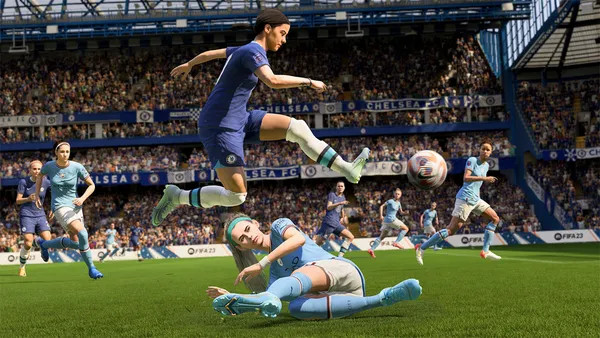
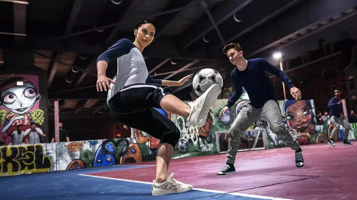

Tendo seu primeiro título lançado em 1993, o jogo de futebol conta atualmente com cerca de 19 mil jogadores e 30 ligas, incluindo ligas femininas como a Barclays WSL (Inglaterra) e a Division 1 Arkema (França). O jogo também contará com duas copas do mundo, sendo a masculina no Catar e a Feminina na Nova Zelândia
Sam Kerr, a jogadora autraliana que atua pelo time feminido do Chelsea, e Kylian Mbappé jogador do Paris Saint-Germain serão as duas figuras que irão compor a capa do novo jogo da EA. Também são embaixadores do Fifa 23, o brasileiro Vinícius Junior, Catarina Macario, Chloe Kelly, Jack Grealish, Jude Bellingham, João Félix, Kai Havertz, Virgil Van Dijk, entre outros.
Ultimate TeamÉ o modo online do game onde os jogadores podem montar os próprios times com moedas que ganham no jogo, podedendo também ser compradas com dinheiro real, quanto mais vitórias o jogador acumular melhores serão as recompensas no final da temporada. Contando com vários modos de jogo, desde o seu lançamento, em 2008, é o recurso mais explorado pela comunidade.
.jpg) Modo Carreira
Modo Carreira
Criado no início dos anos 2000, o Modo Carreira foi um modo inovador que trouxe a posibilidade do público escolher entre jogar sua carreira como um técnico ou até mesmo como um jogador, sendo que na opção de Técnico o player exerce toda uma função administrativa, participando ativamente da contratação, treinamento e escalação de jogadores.
.jpg) Modo Volta
Modo Volta
Inspirado na antiga franquia da EA Sports, Fifa Street, o Modo Volta veio para buscar nos fãs de longa data a nostalgia, podendo criar um avatar e se juntar com seus amigos para disputar partidas de futebol em ambientes urbanos e quadras de futsal realizando dribles irreverentes e finalizações. Uma novidade que esse modo vem trazendo para esse ano são os "Inovadores", basicamente os players irão poder ter em seus times antigos jogadores e grandes nomes da música, da moda e mais.
Imagens e informações tiradas de:
Techtudo EA GamesSobre o autor:
Sobre o autor